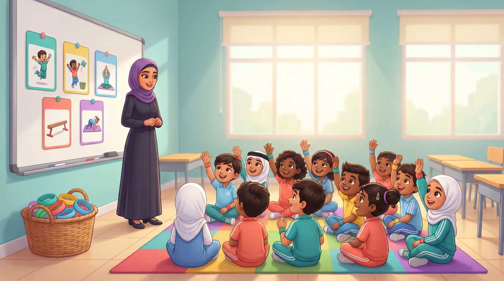

كيف نستخدم هذه الصفحة؟
كل قسم وسيلة رقمية لمرحلة من مراحل الحصّة. تعرضها المعلّمة على الشاشة الذكية، أو يفتحها وليّ الأمر من رمز QR في الملحق.
🔒 لا تجمع هذه الصفحة أي بيانات ولا تطلب تسجيلًا، ولا تعرض صور أطفال حقيقيين. ما يختاره الطفل في التقويم الذاتي وتحدّي الأسرة يُحفظ على جهازه فقط.
مؤقّت المحطّات
تعرضه المعلّمة على شاشة الصف. عند انتهاء الدقائق الخمس تُعزف موسيقى الانتقال، فيرتّب مسؤول الأدوات المحطّة ويقود القائد فرقته إلى المحطّة التالية.
أين تقف كل فرقة الآن؟
✋ إشارة التوقّف: ترفع المعلّمة يدها فيتوقّف الجميع. 🎵 الموسيقى تعني: ننتقل مشيًا باتجاه واحد.
بطاقات المحطّات الرقمية
اضغط على محطّة لعرض تعليماتها. لكل محطّة رابط مباشر يمكن وضعه في رمز QR على البطاقة الورقية.
لعبة سلّة الطعام الصحّي
انظر إلى الطعام، ثم اضغط السلّة الصحيحة. تصلح للعرض على الشاشة قبل محطّة الرمي، أو للعب في البيت.
حديقة الحيوانات
اسحب بطاقة، وقلّد حركة الحيوان من الخطّ الأوّل إلى الخطّ الثاني، ثم عُد ماشيًا.
اضغط «اسحب بطاقة»
⚠️ نتحرّك كلّنا في الاتجاه نفسه، وننظر أمامنا، ونترك مسافة بيننا وبين أصدقائنا.
مستوى البداية: اختر الحيوان الذي تحبّه وتحرّك ببطء. تحدّي الأبطال: اخترع حركة حيوان جديد ويخمّن فريقك اسمه.
قصّة النشاط
عرض مصوّر لخطوات الحصّة بدل الفيديو، يشاهده الأطفال في التهيئة ليعرفوا ما سيحدث.

1
كيف كانت رحلتي؟
اختر الوجه الذي يشبه شعورك في كل محطّة. (يبقى اختيارك على هذا الجهاز فقط.)
تحدّي الأبطال الأسري
كل أسبوع: اختر مع أسرتك محطّتين، ونفّذهما في البيت، ولوّن نجمة في كل يوم تتحرّك فيه.
1. اختر محطّتين لهذا الأسبوع
2. لوحة نجوم الأسبوع
👨👩👧 لوليّ الأمر: يكون التحدّي بحضور شخص بالغ، في مساحة خالية من الأثاث الزجاجي والأطراف الحادّة، مع حذاء رياضي أو أقدام حافية على أرض غير زلقة، وشرب الماء بعد الحركة. شاهدوا البطاقة دقيقة واحدة، ثم ابتعدوا عن الشاشة وتحرّكوا.